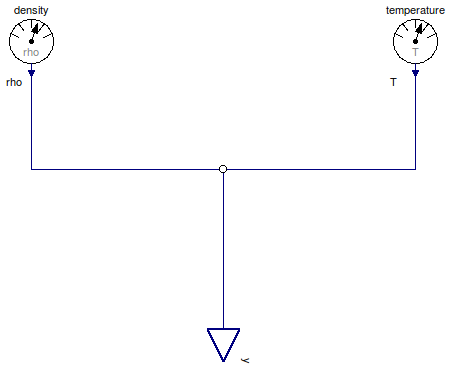

Table of Contents
- User's Guide
- BCs
- Sensors
- Assemblies
- Regions
- Subregions
- Connectors
- Characteristics
- Units
- Quantities
- BaseClasses
Download
- Latest: FCSys-2.0.zip (**Please check back soon or contact kdavies4 at gmail.com.)

| Name | Description |
|---|---|
| PartialSpecies | Partial sensor for a face of a Species model (single-species) |

| Type | Name | Default | Description |
|---|---|---|---|
| ThermoOpt | thermoOpt | ThermoOpt.ClosedAdiabatic | Options for material and thermal subconnectors |
| Type | Name | Description |
|---|---|---|
| RealOutputBus | y | Output bus for measurements |
model PartialSpecies "Partial sensor for a face of a Species model (single-species)" extends FCSys.BaseClasses.Icons.Sensor; parameter ThermoOpt thermoOpt=ThermoOpt.ClosedAdiabatic "Options for material and thermal subconnectors"; // MaterialDensity density if thermoOpt == ThermoOpt.OpenDiabatic "Type of sensor"; // HeatTemperature temperature if thermoOpt <> ThermoOpt.ClosedAdiabatic "Type of sensor"; FCSys.Connectors.RealOutputBus y "Output bus for measurements"; equation // Densityconnect(density.y, y.rho); // Temperatureconnect(temperature.y, y.T); end PartialSpecies;